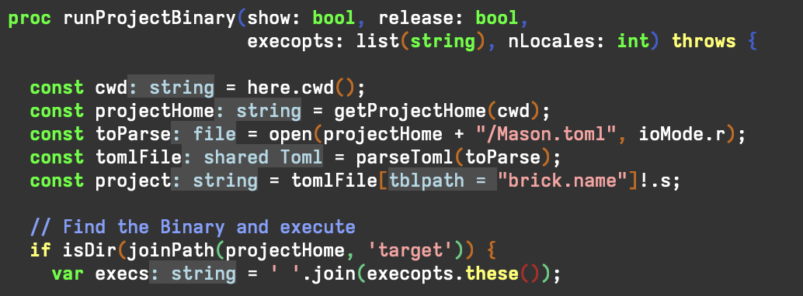
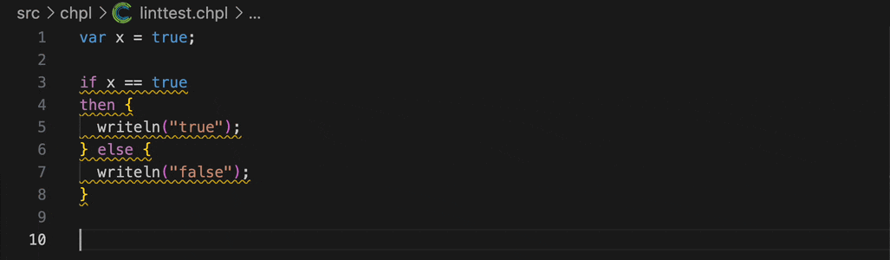
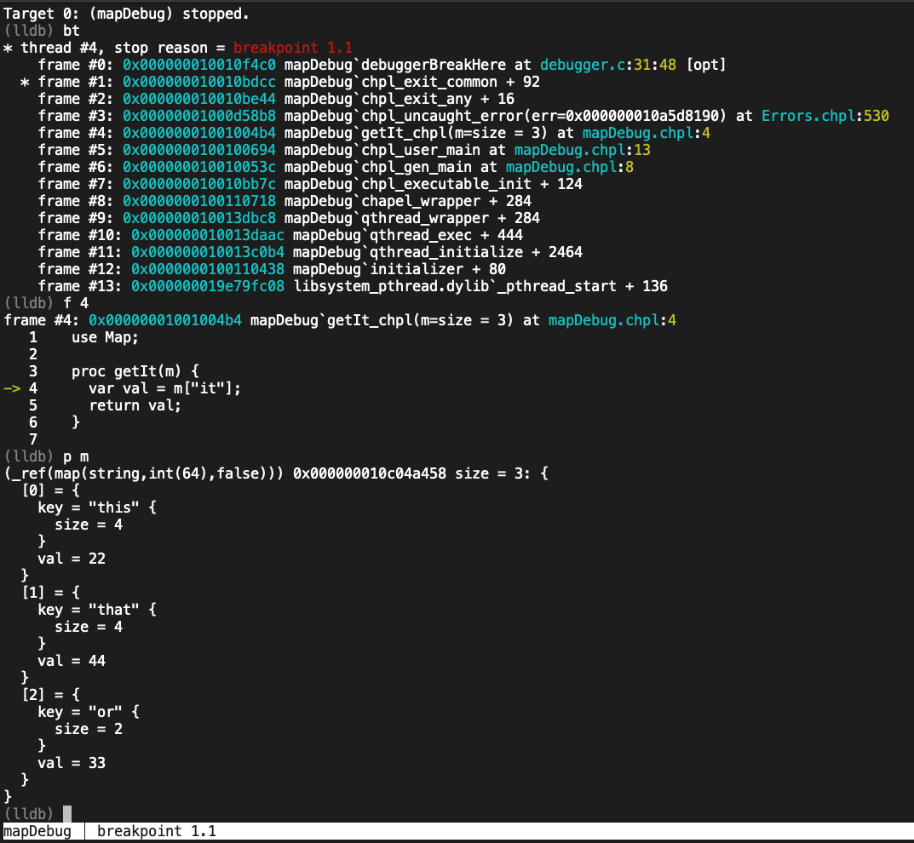
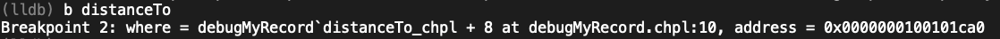
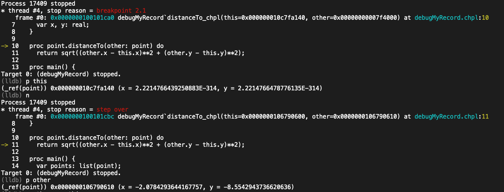
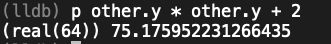
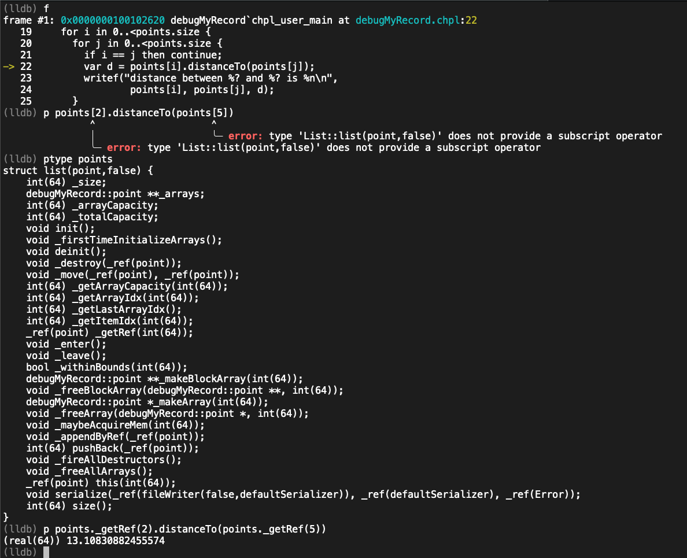
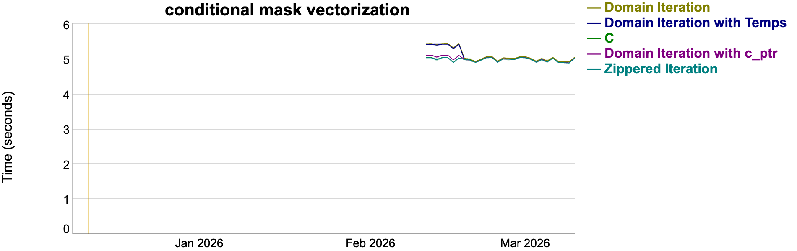
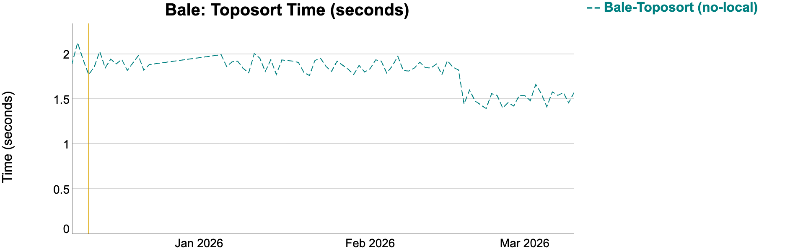

The Chapel developer community is pleased to announce the release of Chapel 2.8! As with other recent versions, a big focus for this release was improvements to Chapel’s tools ecosystem. As always, you can download and install this new version in a [note:Please note that some formats may not yet be available at time of publication…], including Spack, Homebrew, various Linux package managers, Docker, and source tarballs.
This article summarizes several of Chapel 2.8’s highlights, including:
-
Improvements to the Chapel Language Server and Linter
-
Advances in running Chapel programs in debuggers
-
Vectorization benefits due to improved Loop-Invariant Code Motion for arrays
-
A new flag for Slurm launchers supporting the specification of lower-level flags
-
Improvements to the Mason package manager for Chapel
-
A nice “Hello, world!"-style milestone for Dyno-based code generation
Other notable highlights of Chapel 2.8 that aren’t covered by this article include:
-
Support for running Chapel on RISC-V processors using lightweight Qthreads tasking
-
Support for AMD GPUs running versions 6.3 or 7 of ROCm
-
New documentation for troubleshooting issues when launching on HPE Cray EX
-
Support for LLVM 21 as the Chapel compiler back-end
For a far more complete list of improvements in Chapel 2.8, see its entries in CHANGES.md. And a big thanks to everyone who contributed to Chapel 2.8!
Chapel Language Server and Linter
Since our 2.0 release, Chapel has
provided two key tools that enable users to write code more
productively: the Chapel Language Server
(CLS)
and the chplcheck
linter.
This 2.8 release includes several improvements to both of these
tools.
Editing, Resolution, and Inlays
When we first wrote about CLS, we covered language server features that relied on resolution, dubbing them experimental. At that time, the Dyno resolver was in a much more primitive state. In the 2.3 release, Dyno acquired the ability to resolve domains and promoted expressions, while the 2.4 release enabled it to resolve arrays. Since then, the Dyno resolver has continued to make great strides, and today is capable of resolving a substantial (though not complete) portion of the language. As a result, the experimental support for resolution-driven features in CLS has been steadily growing more robust.
In the 2.8 release, we’ve spent some time tracking down bugs that specifically affected CLS in established codebases such as Mason. The result should be a relatively stable experience when using these resolution-driven features.
The following screenshot shows inferred types and other information
(using a lighter background and blue font) while editing part of
the Mason codebase. Notably, the execopts.these() call at the end
of the block demonstrates a resolved iterator. Other hints in
this file show off successfully resolved calls to other modules in
the Mason source code, as well as correct understanding of bundled
package types such as Toml.

We’ve also improved the behavior of information displayed in this manner (“inlays”, in language server terminology). Specifically, since CLS presently computes this information upon saving a file, we’ve adjusted the inlays to be invalidated (if necessary) when editing a file, until the file is saved. This avoids pain from stale inlays intermingling with source code as it is being modified.
New Linting Checks
Building on a number of improvements to our compiler’s tracking of
source locations in this release, we’ve also introduced a number of
new rules to the chplcheck linter. These include:
-
BoolComparison, which flags patterns such ase == truethat ought to be written aseinstead -
UnattachedCurly, which flags code where the curly brace doesn’t immediately follow the condition of a control flow statement -
ThenKeywordAndBlock, for patterns likeif e then { ... }, where thethenis redundant
The following animated GIF demonstrates these three checks being
flagged, as well as chplcheck’s built-in functionality to
automatically fix them.

CMake Integration
New in this release, Chapel’s CMake integration can use the
chpl-shim
tool (previously covered in our article on editor integration) to generate
a .cls-commands.json file for a Chapel project. This significantly
improves the experience of using CLS with CMake-based Chapel
projects, since it allows the editor to reason natively about the
project’s source structure. This new integration also enables other
patterns, such as source generation: generated files in the build
directory can now be properly found and integrated with other files
in the project.
Enabling this integration boils down to using the new
CMAKE_EXPORT_CHPL_COMMANDS environment variable:
mkdir build
cmake -B build -DCMAKE_EXPORT_CHPL_COMMANDS=ON
cmake --build build
After executing these commands, the build directory will contain a
.cls-commands.json file. A common pattern is then to symbolically
link this file to the project root:
ln -s build/.cls-commands.json .cls-commands.json
From there, CLS should be usable as normal. Subsequent builds
will update the.cls-commands.json file, if necessary.
Debugging
For this release, we continued improving the debugging experience
for Chapel users. Chapel 2.8 adds new pretty-printers for common
Chapel data structures, like list, set, map, and distributed
arrays. In addition, 2.8 expands the set of expressions that can be
evaluated within the debugger
New pretty-printers
As an example of the new pretty-printing capabilities, consider the following program, noting that it contains a simple bug since it tries to read a non-existent key from a map:
If we run this program, the bug will cause it to halt due to the error not being caught and handled:.
|
|
Re-running in a debugger permits us jump to the stack frame where
the error occurs and inspect the state of the program. With the new
pretty-printers, we can easily see the contents of the map m and
understand why the error is occurring.

These new pretty-printers are useful by themselves, but they are built on top of powerful new debugging capabilities that we’ll describe next:
Expression Evaluation
In this release, we dramatically improved the ability of the debugger to reason about Chapel expressions. As an example, consider the following program:
|
|
We can run this program in the debugger and set a breakpoint on the
.distanceTo() method:

Once we hit the breakpoint, we can step into the method and inspect
both this and other:

In addition, we can perform arbitrary arithmetic with those values:

We can even invoke the .distanceTo() method directly from the
debugger. This is not yet perfect and has some limitations, but most
of the time those limitations can be worked around to obtain the
needed information, as demonstrated below:

This is a huge improvement over previous releases, in which none of the above was possible.
These new features help make the Chapel debugging experience much more like debugging conventional languages like C or C++. The net result improves the ability to run Chapel programs in a debugger and has enabled us to track down and fix bugs in Chapel code far more quickly. We are excited to hear feedback from users about how they are applying these new features in their own debugging workflows.
Loop-Invariant Code Motion for Arrays
Like most compiled languages, Chapel relies on Loop-Invariant Code Motion (LICM) as an optimization to avoid executing code redundantly within loop bodies. In this release, we improved Chapel’s LICM to enable vectorization and improve performance.
(“Hold up… What’s Loop-Invariant Code Motion?”)
As a trivial example of Loop-Invariant Code Motion, the following
computation of halfPi does not need to be re-evaluated in each of
the loop’s n iterations, since its value is independent of i:
forall i in 1..n {
const halfPi = pi / 2;
A[i] *= halfPi;
}
As a result, compilers can use LICM to rewrite this loop as follows, hoisting the computation out of the loop to avoid the redundant effort:
const halfPi = pi / 2;
forall i in 1..n {
A[i] *= halfPi;
}
When compiling Chapel programs, LICM is performed in [note:The reason for “both” is that it’s a no-brainer to leverage the back-end compiler to benefit from decades of C-level optimizations. The rationale for also having the Chapel compiler perform LICM is that there are cases in which it has access to high-level semantic information that is significantly obfuscated, or even lost, when lowering to the C-level code that’s handed off to the back-end. Hoisting such expressions in the Chapel compiler can therefore unlock new optimization opportunities enabled by the language’s high-level features.] the Chapel compiler and the standard LLVM or C compiler that makes up its back-end. An important case for the Chapel compiler to handle relates to the metadata used for array accesses. When it’s known that an array will not be resized within a loop, we can hoist reads of its metadata fields, as well as repetitive computations on their values, out of the loop to save work in each iteration. This is particularly important for Chapel given that its multidimensional, sparse, and/or distributed arrays can involve a significant amount of metadata that back-end compilers aren’t accustomed to (given their focus on more traditional C-style buffers, pointers, and offsets). By [note:This is an illustration of a point made in the first article of our recent 10 Myths About Scalable Parallel Programming Languages (Redux) series.], the Chapel compiler is well-suited to hoist such computations.
In Chapel 2.8, we extended Chapel’s existing LICM pass to hoist
metadata computations for arrays that are declared const, knowing
that they can’t change their size, shape, or indices. This work was
motivated in part by Thitrin Sastarasadhit’s transformers
study
that was published on this blog a few months ago. Specifically,
these improvements enable vectorization for key loop kernels that
had previously been thwarted by such array metadata accesses.
The following execution time plot, taken from Chapel’s nightly performance tracking suite, shows the impact of this optimization on a kernel motivated by Thitrin’s code:

Specifically, the loop idiom improved by ~7.5% once our LICM improvement was merged on February 17th, making its performance comparable to lower-level ways of writing the kernel that also enabled vectorization. We saw similar improvements to other longstanding, array-oriented computations such as the following port of Bale toposort:

New flag: --system-launcher-flags
Chapel 2.8 adds a new execution-time flag,
--system-launcher-flags, to Chapel programs built to use
Slurm-based
launchers.
This flag can be used to pass additional options to the underlying
Slurm commands, like srun, that get the Chapel program running.
This is particularly valuable when users need to specify Slurm
options that aren’t supported directly by Chapel. Generally,
Chapel’s standard launcher flags and environment
variables
should be used when applicable, with this new flag serving as a
fallback.
As a motivating example, a user performing benchmarking studies who
wants to override the default number of reserved specialized cores
using Slurm’s --core-spec or -S flag would be at a loss using
standard Chapel options, since they do not support that override.
Prior to Chapel 2.8, such users would either need to rely on a Slurm
environment variable to make the request, or else to abandon
Chapel’s launcher and write their own Slurm script or command to
launch the program (which can be tricky to get right).
However, as of Chapel 2.8, users can run their program with
--system-launcher-flags "-S 0" to have Chapel pass -S 0 to the
underlying srun command that’s invoked on their behalf. This
saves effort and reduces the potential for errors, while also making
the command-line more explicit. We anticipate that future Chapel
releases will extend this capability to support non-Slurm launchers,
as desired by the user community.
Mason Package Manager
Chapel’s package manager, Mason, has seen a lot of new features added in recent releases. For version 2.8, we made a concerted effort to track down and fix many edge cases and bugs, and as a result, we are happy to report that Mason is now much more robust and reliable. This isn’t the most exciting work, but it is important for the long-term health of the tool and project.
One exciting new feature for Mason is the improved mason doc
command. This effort involved several improvements to the underlying
chpldoc
tool, which is used to generate documentation for Chapel
modules. The mason doc command now specializes the documentation
for the project by default, while also giving users the tools to
better customize the results.
We are really excited to see Chapel users and developers starting to create and contribute more packages to Mason. We hope to see the Mason registry grow and become a vibrant ecosystem of Chapel packages that users can easily discover and use in their own projects.
Dyno Compiler Code Generation
As you may have seen in previous release announcements, Dyno is the name of our project that is modernizing and improving the Chapel compiler. Dyno improves error messages, allows incremental type resolution, and simplifies the development of language tooling. Our team has been hard at work implementing many features of Chapel’s type system in Dyno. Among other things, this enables tools like CLS to provide more accurate and helpful information to users, as described above.
The other current focus within Dyno is taking the information that
it has computed about a program and translating it into a form that
the production compiler can understand, essentially skipping over
its historical type resolution and analysis phases. This capability
is enabled using the --dyno command-line flag. Current support is
limited to a subset of Chapel’s language features, but is growing
all the time.
A key milestone for Dyno in Chapel 2.8 is the ability to generate executable code for “Hello, world”-style programs. This is a significant milestone for Dyno, as it demonstrates the ability to compile many language features that the standard library relies upon. It’s also a big step toward Dyno’s goal of replacing the front-end of the production compiler.
As an example, consider the following program, which makes use of
the fileWriter type and its .writeln() method in various ways:
As of Chapel 2.8, this program can be [note:The --no-checks flag is used here to disable
runtime checks that utilize language features not yet supported by
Dyno’s code generation.] with --dyno --no-checks to have Dyno produce an executable that prints the
following output:
|
|
While a program like this may appear to be somewhat straightforward,
behind the scenes it relies on many language features for its
implementation. Here are just a few of the Chapel features that are
being used by the IO module in this example:
- generic variadic arguments
- external interoperability
- owned and shared classes
- records, classes, and tuples
- nested records (as used by the serialization framework)
- reflection
- locales
Compiling such a program helps to provide a solid basis for supporting more standard libraries and language features that build upon these basic building blocks.
For More Information
If you have questions about Chapel 2.8 or any of its new features, please reach out on Chapel’s Slack workspace, Discord channel, Discourse group, or one of our other community forums. We’re always interested in hearing more about how we can make the Chapel language, libraries, implementation, and tools more useful to you.